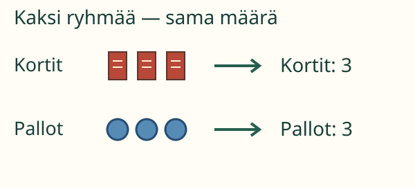
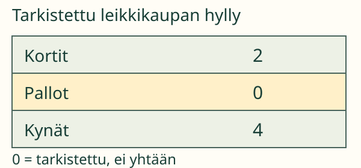
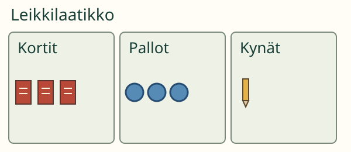

<link rel="stylesheet" href="lesson.css">
<section data-table-maker>


<section data-teaching-step="1" data-lesson-role="teaching-step">
<p> Aava haluaa nähdä yhdellä silmäyksellä, mitä leikkilaatikossa on. Tehdään tavaroista taulukko!</p>
<h2>Jokaiselle tavaralajille oma rivi</h2>
<p><strong>Tavoitteesi:</strong> Teet taulukon, jossa tavaran nimi ja määrä kuuluvat yhteen.</p>
<p>Laita tuttuja tavaroita ryhmiin. Anna jokaiselle ryhmälle oma nimikortti. Kirjoita sen viereen, montako ryhmässä on. Taulukon otsikot kertovat, mitä nimi ja luku tarkoittavat.</p>
</section>


<section data-teaching-step="2" data-lesson-role="teaching-step">
<h3>1. Sama luku saa olla kahdella rivillä</h3>
<figure data-lesson-role="worked-example"><figcaption>Nimikortti ei ole yksi lisätavara. Lasketaan vain ryhmän tavarat.</figcaption></figure>
<p>Kortteja on 3 ja palloja 3. Molemmille riveille tulee 3. Taulukon lukujen ei tarvitse olla erilaisia.</p>
</section>


<section data-teaching-step="3" data-lesson-role="teaching-step">
<h3>2. Leikkikaupan lista</h3>
<figure data-lesson-role="worked-example"></figure>
<p>Hylly tarkistettiin, eikä palloja ollut. Pallojen määrä on <strong>0</strong>. Tyhjä ruutu tarkoittaisi, ettei määrää ole vielä merkitty. Se ei tarkoita samaa kuin nolla.</p>
</section>


<section data-teaching-step="4" data-lesson-role="teaching-step">
<p data-lesson-role="question"><strong>Mieti:</strong> Voiko pallojen rivin laittaa ennen korttien riviä?</p>
<details data-lesson-role="answer"><summary>Katso ajatus</summary><p>Voi. Rivien järjestys saa vaihtua, kun nimi ja oikea määrä pysyvät yhdessä.</p></details>
</section>


<section data-teaching-step="5" data-lesson-role="teaching-step">
<div data-maker-practice hidden>
<h3>Rakenna oma taulukko</h3>
<p>Valitse otsikot, tavaralajit ja määrät. Sama luku saa toistua.</p>
<fieldset data-controls data-audience-columns><legend>Taulukkopaja</legend><div data-response-column><table><caption>Oma taulukko</caption><thead><tr>
<th scope="col"><label>Ensimmäisen sarakkeen otsikko<select data-heading="kind"><option value="">Valitse</option><option value="kind">Tavara</option><option value="colour">Väri</option></select></label></th>
<th scope="col"><label>Toisen sarakkeen otsikko<select data-heading="count"><option value="">Valitse</option><option value="count">Määrä</option><option value="length">Pituus</option></select></label></th>
</tr></thead><tbody data-maker-rows></tbody></table><button type="button" data-action="check">Tarkista taulukko</button></div><div data-visual-column><p data-source-title></p><details data-lesson-role="hint"><summary>Tarvitsen apua</summary><p data-source-help></p><p>Kysy riviltä: mikä tavara? Montako? Katso samaa ryhmää kuvassa. Jos ryhmä on tarkistettu ja siinä ei ole yhtään, merkitse 0.</p></details><button type="button" data-action="reverse">Vaihda rivijärjestys</button><button type="button" data-action="source">Toinen laatikko</button><p data-feedback role="status" aria-live="polite">Otsikot ja rivit saavat vielä muuttua.</p></div></fieldset>
</div>

</section>


<section data-teaching-step="6" data-lesson-role="teaching-step">
<details data-lesson-role="worked-example"><summary>Lisäpohdinta</summary><p>Riittääkö, että kaikkien rivien yhteismäärä on oikein? Ei aina. Kahden tavaralajin määrät voivat olla väärillä riveillä. Tarkista jokainen nimi ja määrä yhdessä.</p></details>
</section>


<details data-lesson-role="teacher-note"><summary>Opettajalle ja ilman ruutua</summary><p>Luokat 1–2. Vaadittu esitieto on M-DATA-03, taulukon rakenteen ymmärtäminen. Nimet ovat valmiina: esineiden tai muotojen nimeämistä ei testata. Pienten määrien laskenta ja lukumerkintä ovat tämän tehtävän tuettuja oletuksia; tarvittaessa lue ja näytä vastaavuus. Viisiryhmiä tai vähennyslaskua ei vaadita.</p><p>Tehkää oikea taulukko turvallisista tutuista tavaroista ja nimikorteista. Kokeilkaa tasamääriä ja tarkistettua nollaa. Ruutupaja tarkistaa annettujen aineistojen otsikot, luokat ja määrät; se ei todenna oikeaa inventointia, täysin itsenäistä suunnittelua tai pysyvää osaamista. Vastauksia ei tallenneta.</p></details>


<section data-teaching-step="7" data-lesson-role="teaching-step">
<p data-lesson-role="question"><strong>Lähtökysymys:</strong> Mistä lukija tietää, mitä rivin luku tarkoittaa?</p>
<details data-lesson-role="answer"><summary>Lähtökysymyksen ajatus</summary><p>Rivin nimi ja sarakkeen otsikko kertovat sen yhdessä.</p></details>
</section>


</section>
